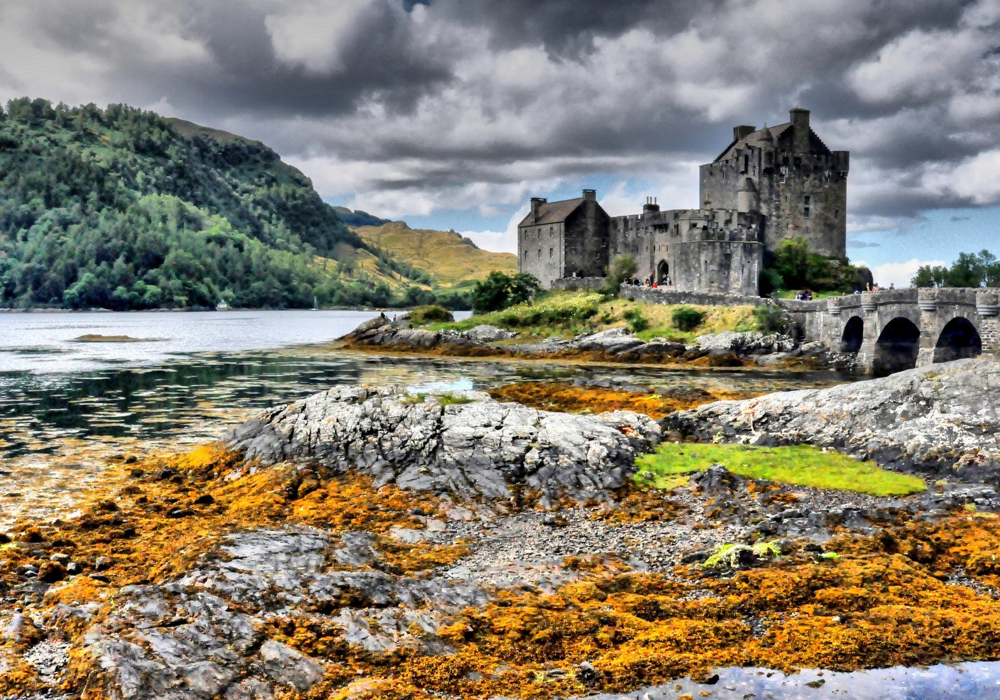
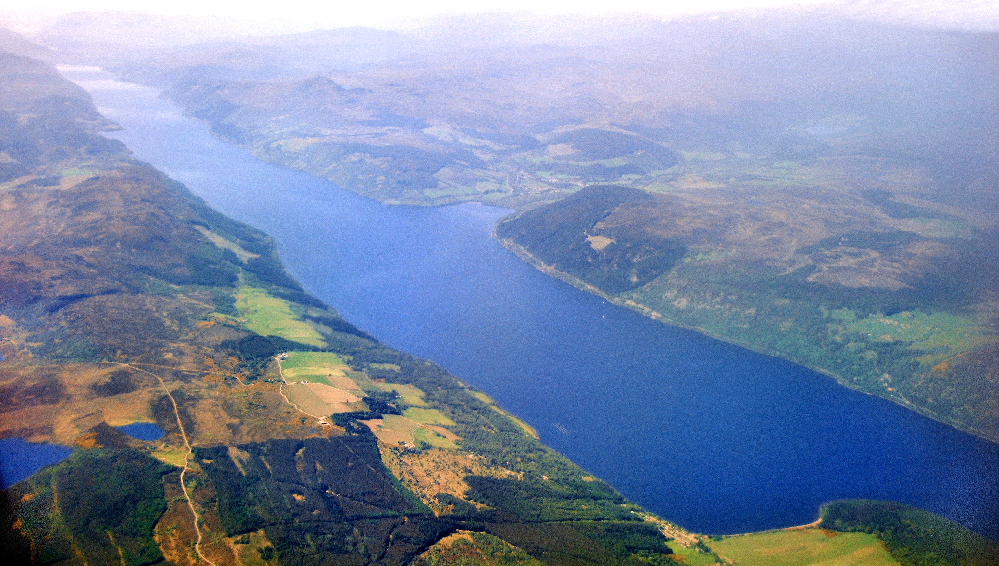
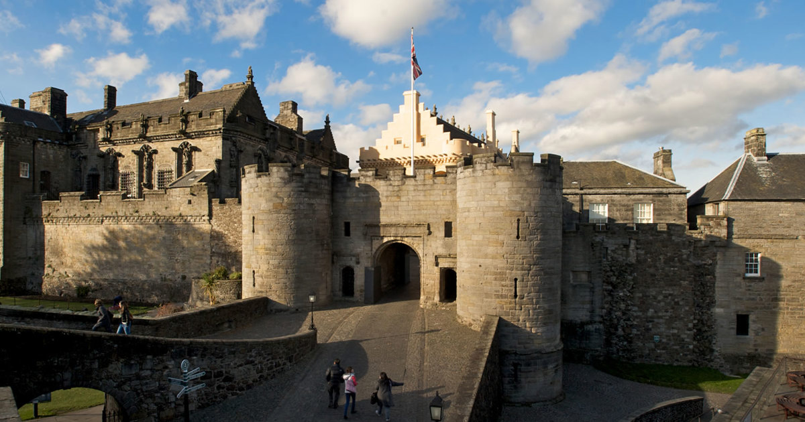
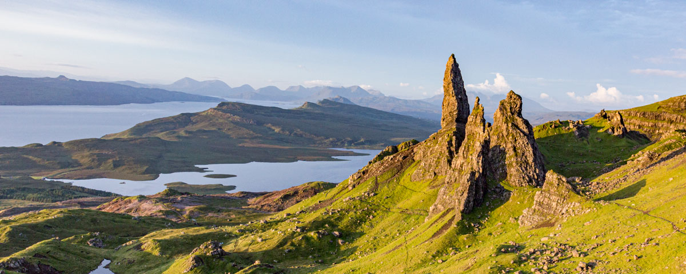
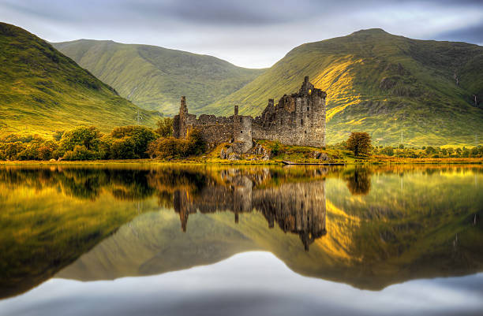

Scotland: Places to Visit
Discover famous Scottish castles, historic landmarks, and breathtaking landscapes.

Historic fortress dominating the skyline of Edinburgh.

One of Scotland’s most photographed castles.

Famous lake known for the legend of the Loch Ness Monster.

One of Scotland's grandest historic castles.

Famous for dramatic cliffs and rugged landscapes.

Beautiful mountain landscapes and historic heritage.